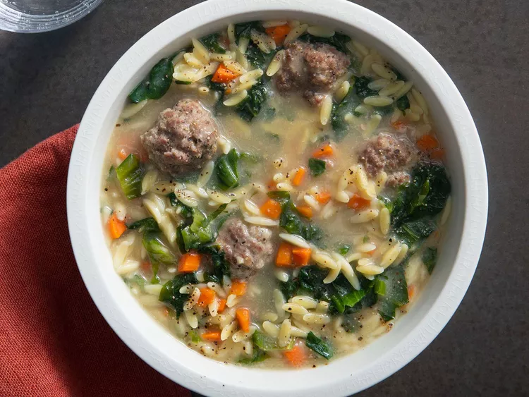
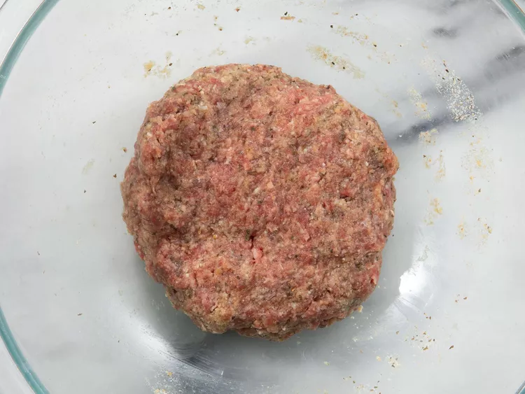
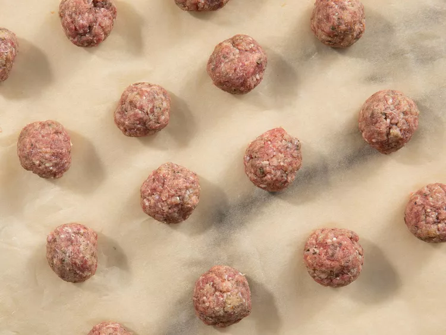
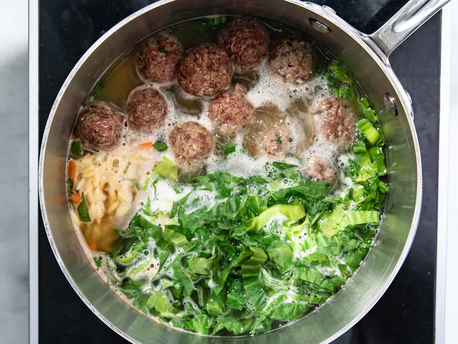

Italian Wedding Soup

What is an Italian Wedding Soup?
Italian wedding soup is a hearty Italian soup consisting of noodles, vegetables, meatballs, and broth. It was originally a "peasant dish," meaning it's made from inexpensive ingredients that anyone could find.
Why is it called Italian Wedding Soup?
Even though it's called "wedding soup," this soup has nothing to do with weddings. The name comes from the Italian phrase "minestra maritata," which actually means married soup. But it's not the marriage we think of — it's actually referring to the marriage of the ingredients and the flavor it produces.
Types of Ingredients in an Italian Wedding Soup:
- Meatballs:Combine ground beef, egg, bread crumbs, Parmesan, basil, and onion powder to create the meatballs.
- Broth:This recipe calls for chicken broth — though reviewers have had luck using different broths too.
- Vegetables:This soup has escarole and carrots. You can also add onions or celery if you want more color.
- Pasta:This particular recipe calls for orzo pasta, which is what we like to use. But you can really use any small pasta you have on hand, like ditalini or acini de pepe.
Steps to make an Italian Wedding Soup:
Ingredients:
- ½ pound extra-lean ground beef
- 1 large egg, lightly beaten
- 2 tablespoons dry bread crumbs
- 1 tablespoon grated Parmesan cheese
- ½ teaspoon dried basil
- ½ teaspoon onion powder
- 5 ¾ cups chicken broth
- 2 cups thinly sliced escarole
- 1 cup uncooked orzo pasta
- ⅓ cup finely chopped carrot
Directions:
- Combine ground beef, egg, bread crumbs, Parmesan cheese, basil, and onion powder in a bowl.
- Shape beef mixture into 3/4-inch balls and place on a parchment-lined tray.
- Heat broth in a large pot over medium-high heat until boiling. Stir in escarole, orzo, carrot, and meatballs and return to boil. Reduce heat to medium and cook at slow boil, stirring frequently to prevent sticking, until pasta is tender yet firm to the bite, about 10 minutes.
- Serve hot and enjoy!